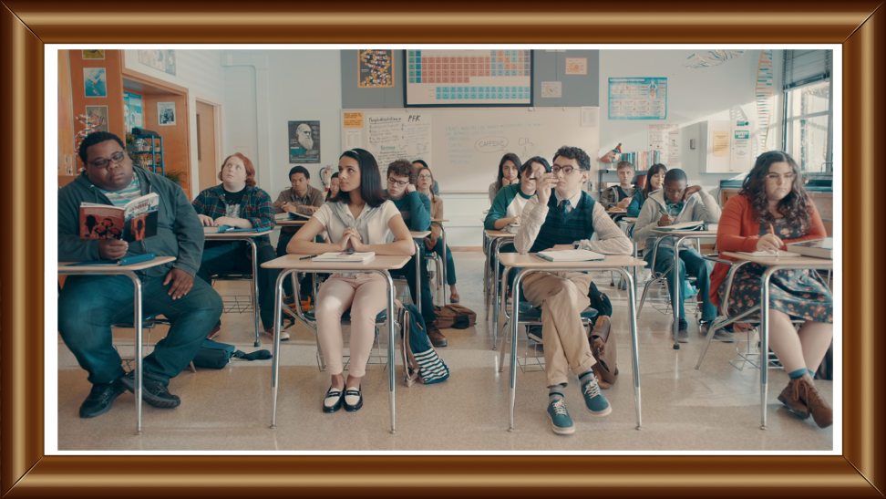

Characters in Media
How do writers develop interesting characters for their audiences?
This blog is run by Aary Hash, a creative person passionate about media production. Through this website, he analyzes the characters developed in some of his favorite pieces of media, whether that be shows, movies, novels, or video games. With the help of the audience, he tackles the core issues and patterns in writing interesting characters with depth to their story, and attempts to analyze why lesser-loved characters may have struggled to gain audience attraction after their debut. A blog like this ultimately hopes to create a deeper appreciation in its audience to the time and energy that goes into creating well-written characters, and hopes to propel them forward in their own creative journies.
The image above is taken from the first scene of the show AP Bio. For a show such as this with an ensemble cast, a major difficulty for writers is the need to efficiently and effectively showcase each individual's personality, and ensure they all are distinct from each other to viewers. As readers analyze this image, they will notice how the show attempts to tackle this issue of character development early on through placement in the scene. Each character is placed strategically to give a small indicator as to their personality for the sitcom, showcasing how every choice made for a character contributes to their audience perception and potential story arcs.